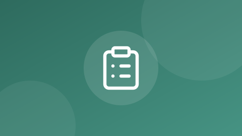

Kit d'urgence 72 h et handicap : 114, matériel et aidants
En situation de handicap, préparer 72 heures d'autonomie exige d'adapter le kit et la communication d'urgence. Connaissez le 114 (accessible par SMS, visio et application), anticipez le matériel médical dépendant de l'électricité et organisez un relais clair avec vos aidants.
Informations pratiques, sources officielles (SGDSN (Guide Tous responsables, 20/11/2025), Ministère de l'Intérieur / Urgence 114, handicap.gouv.fr, service-public.gouv.fr). Elles ne remplacent pas les consignes des autorités. En cas d'urgence, appelez le 112 et suivez les consignes de la préfecture, de la radio et de FR-Alert.
Le 114 : alerter les secours par SMS, visio ou application
Le 114 est le numéro national d'urgence gratuit, disponible 24h/24 et 7j/7, pour les personnes ayant des difficultés à entendre ou à parler, qu'elles soient victimes ou témoins. Il permet aussi d'alerter discrètement lorsque parler est impossible.
- Canaux d'accès : envoi d'un SMS au 114, ou appel en visioconférence et tchat via l'application 114 ou le site officiel info.urgence114.fr.
- Transmission aux secours : les opérateurs orientent vers les services de secours adaptés (Samu, pompiers, police ou gendarmerie).
- Préparation sur le téléphone : enregistrez le 114 à l'avance et notez votre adresse, votre étage ou accès et vos besoins essentiels pour gagner du temps en cas d'urgence.
Matériel médical électrique et adaptation du kit
Une coupure de courant ou une évacuation peut perturber les équipements médicaux ou d'aide à la mobilité. Intégrez ces points à votre kit d'urgence 72 h et à votre organisation quotidienne.
- Identifiez les appareils sensibles : listez tout matériel médical ou d'assistance fonctionnant sur secteur ou batterie et vérifiez son autonomie sans courant.
- Préparez consommables et rechanges : conservez des piles adaptées, câbles, dispositifs de secours manuels si applicable, traitements et copies d'ordonnances dans une pochette étanche.
- Anticipez l'évacuation : prévoyez l'accès sans ascenseur en cas de panne électrique ou de consigne de sécurité, et gardez à portée de main les aides techniques indispensables.
Coordonner les aidants et l'entraide de proximité
Un plan clair entre la personne concernée, les aidants familiaux ou professionnels et les voisins évite l'isolement pendant les premières 72 heures.
Rôles des aidants
- Définir qui vérifie le kit et les stocks
- Préciser qui contacter en cas d'absence ou de crise
Fiche d'urgence
- Traitements, allergies et consignes de soins
- Numéros des proches, aidants et services
Voisinage et mairie
- Voir entraide entre voisins en crise
- S'inscrire au registre communal via le CCAS si concerné
Questions fréquentes
Comment fonctionne le 114 en cas d'urgence ?
Le 114 est un service d'urgence gratuit et national ouvert 24h/24, accessible par SMS, application dédiée et visioconférence ou tchat via info.urgence114.fr, pour les personnes sourdes, malentendantes, aphasiques ou dans l'impossibilité de parler.
Que prévoir si un appareil médical a besoin d'électricité ?
Vérifiez l'autonomie sur batterie de l'équipement, consultez votre médecin ou prestataire de santé sur la conduite à tenir en cas de coupure prolongée et gardez des piles ou consommables de rechange prêts à l'emploi.
Comment organiser la coordination avec les aidants ?
Répartissez par écrit les tâches (réapprovisionnement, contact en cas d'alerte, aide à l'évacuation) et conservez une fiche à jour accessible aux personnes de confiance.
Peut-on utiliser le 114 si l'on n'est pas sourd ou malentendant ?
Oui, le 114 est également utile lorsqu'une situation impose de rester silencieux ou qu'il est impossible de parler à voix haute.
À lire aussi
 Coupure d'électricitéQue faire dès les premières minutes d’une coupure de courant. Conservation des aliments, chauffage, sécurité. + checklist du kit d’urgence 72h.
Coupure d'électricitéQue faire dès les premières minutes d’une coupure de courant. Conservation des aliments, chauffage, sécurité. + checklist du kit d’urgence 72h. Entraide entre voisinsComment créer un réseau d’entraide de voisinage avant une crise. Ce que recommande le guide « Tous responsables » + outils concrets pour s’organiser.
Entraide entre voisinsComment créer un réseau d’entraide de voisinage avant une crise. Ce que recommande le guide « Tous responsables » + outils concrets pour s’organiser. Kit de survie 72 h : la listeListe complète du kit d’urgence 72h du gouvernement : eau, nourriture, radio, trousse… Version claire + checklist interactive gratuite adaptée à votre foyer.
Kit de survie 72 h : la listeListe complète du kit d’urgence 72h du gouvernement : eau, nourriture, radio, trousse… Version claire + checklist interactive gratuite adaptée à votre foyer.
Plan familial de mise en sûretéOrganiser son plan familial de mise en sûreté : qui fait quoi, point de rendez-vous, contacts utiles et articulation avec le kit d'urgence 72 h.